App Name: OffLink
Target Users: Anyone who wants to make group voice calls within the same WiFi network
Created: March 9, 2026
Last Updated: April 11, 2026
OffLink is an app that enables group voice calls without the internet, within the same WiFi / tethering environment. It delivers low-latency voice calls through WebRTC-based P2P communication.
Example Use Cases:
The home screen right after launching the app. Start by using the three buttons at the bottom.
OffLink operates in WiFi LAN mode. With everyone connected to the same WiFi network (home WiFi, mobile tethering, pocket WiFi, etc.), the host device starts a signaling server and voice calls are made between devices on the same network.
Key Point: No internet connection is required. As long as the router or tethering device is broadcasting a signal, calls can be made.
| Role | Supported Devices | Description |
|---|---|---|
| Host (Call Organizer) | Android / iPhone | The device that starts the signaling server and manages the call |
| Guest (Participant) | Android / iPhone | Devices that join the call created by the host |
Note: All participants must be connected to the same WiFi network.
The app requests all of the following permissions at first launch. Some features will not work unless all permissions are granted.
| Permission | Purpose | Impact if Denied |
|---|---|---|
| Microphone | Voice calls | Cannot make calls |
| Camera | QR code scanning | Cannot register groups via QR |
| Nearby Devices (WiFi) ※Android | WiFi network detection & host discovery | Cannot detect hosts |
| Location ※Android | WiFi scanning (required by Android OS) | Cannot retrieve WiFi SSID |
| Bluetooth ※Android | Bluetooth headset support | Cannot use headsets |
| Notifications ※Android | Call invitation notifications | No notifications when app is in background |
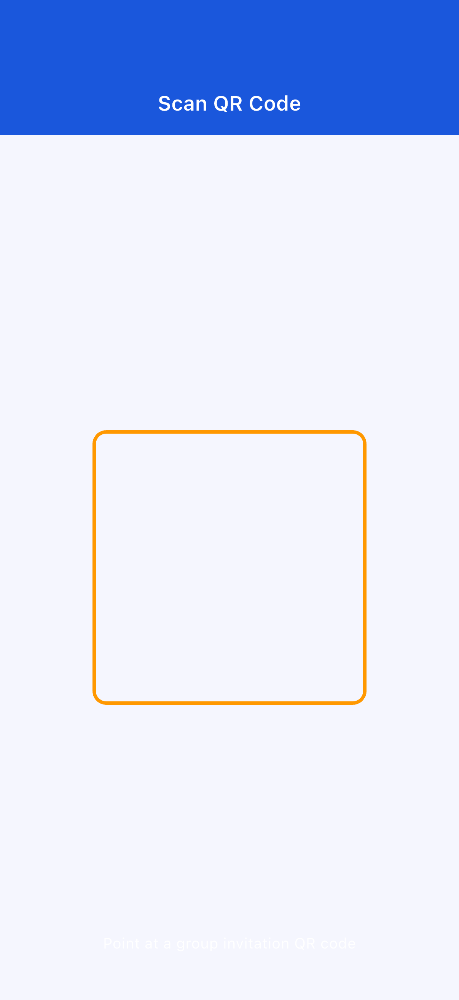
If you accidentally denied a permission:
The app will display a dialog guiding you to the settings screen. Go to your device's Settings → Apps → OffLink to change the permission.
(home WiFi, tethering, pocket WiFi, etc.)
Start a call immediately with members on the same WiFi — no need to create a group first.
Step 1: Have everyone connect to the same WiFi network.
Step 2: Tap "Call Now" (the green button) on the home screen.
Step 3: A dialog will appear asking you to enter your username. Enter the name that will be displayed to other members during the call.

Step 4: Select a tier on the point consumption screen and start the call (→ see 3-5. Point System).
Step 5: Other members on the same WiFi network will be automatically notified of the call invitation. The call begins once members join.
If a host already exists:
If there is already a host on the same network, you can choose to join the existing call or start a new one.
If you regularly call with the same members, it's convenient to create and save a group.
Step 1: Tap "Create as Host" (the blue button) on the home screen.
Step 2: Enter a group name and password (optional) on the group creation screen, then tap "Create".
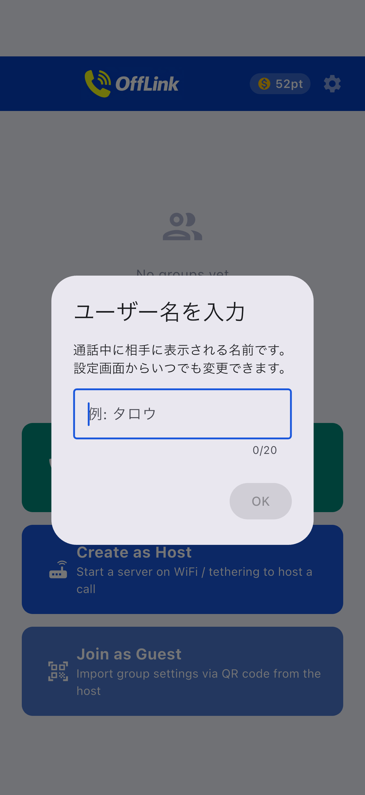
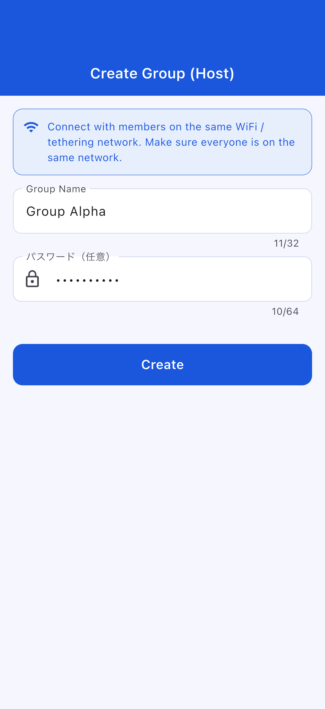
Tips:
- Choose a group name that's easy for members to recognize (e.g.,Touring Group A,Warehouse Comms)
- Setting a password prevents unknown people from joining (recommended)
Step 3: Choose a creation action. A bottom sheet will appear.
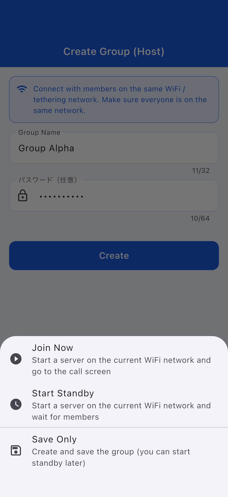
| Action | Description |
|---|---|
| Join Now | Starts the server on WiFi LAN and immediately goes to the call screen |
| Start Standby | Starts the server and waits for members to connect |
| Save Only | Only saves the group information (can be started later) |
Members (guests) receive group information from the host and register to join.
Step 1: Tap "Join as Guest" (the light blue button) on the home screen.
Step 2: Choose how to join. There are three methods.
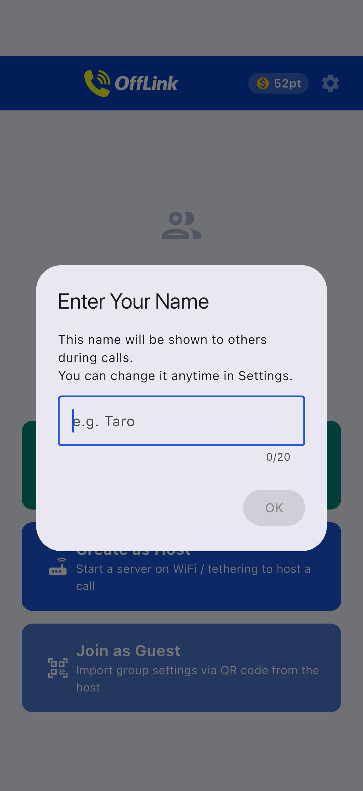
| Method | How To |
|---|---|
| 📱 Scan QR Code | Scan the QR code displayed by the host with your camera (easiest method) |
| 📋 Paste Code | Paste the code shared by the host via LINE, messaging apps, etc. |
| ✏️ Manual Input | Directly enter the group name, SSID, and password |
Sharing a Group via QR Code (Host Side):
The host can display a QR code by tapping the QR icon on the right side of the group card on the home screen.
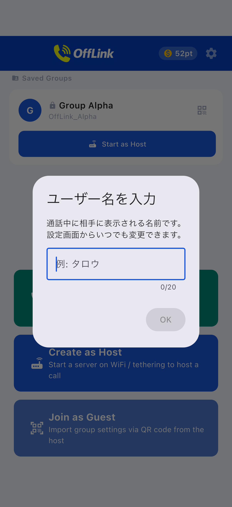
Other members can scan it using OffLink's "Scan QR" feature.
Joining via Pasted Code (Guest Side):
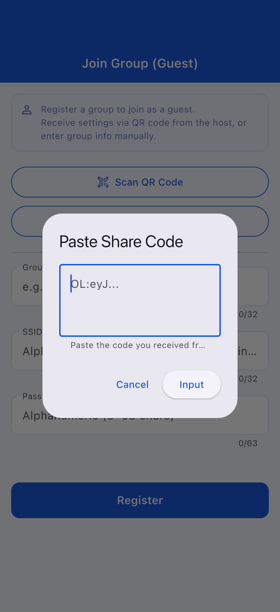
Step 3: Once the group information is auto-filled, tap "Register".
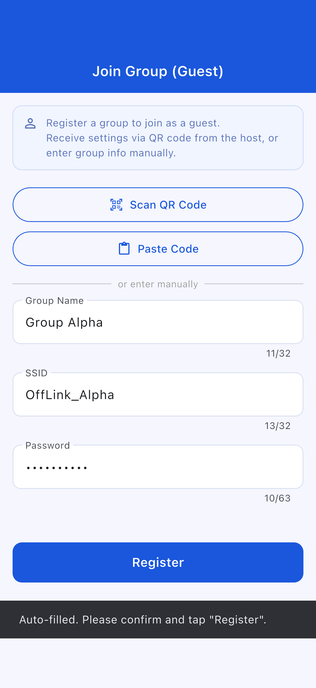
Groups that have been created or registered are saved on the home screen.
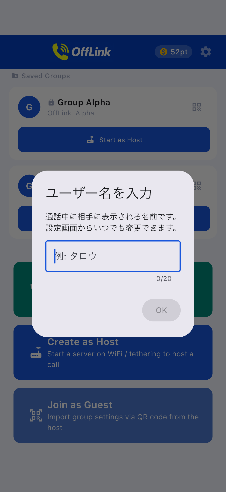
Guest Join Screen:
Enter your username and select the group to join.
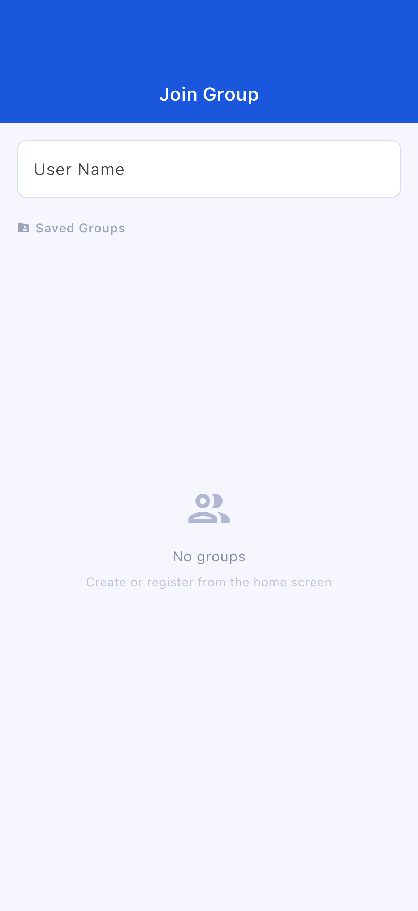
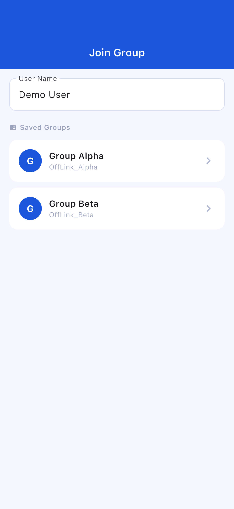
Standby Screen:
When the host starts the server, the standby screen shows a waiting-for-connection state.
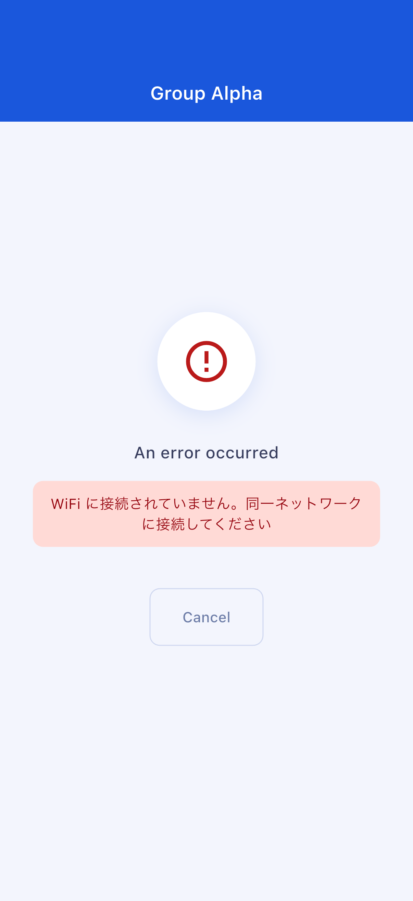
Call Screen:
Once the connection is established, the screen automatically transitions to the call screen.
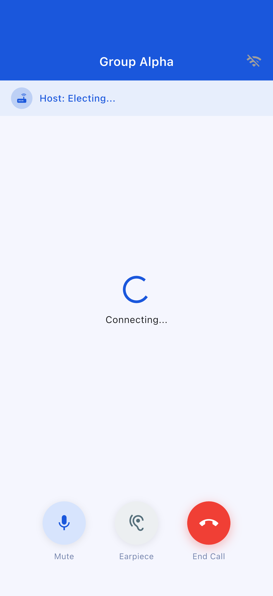
Call Screen Controls:
| Button | Function |
|---|---|
| 🎤 Mute | Toggle your microphone on/off |
| 🔊 Audio Output Switch | Switch between speaker / Bluetooth / earpiece |
| 🔴 End Call | Leave the call |
Points are required to start a call. Points can be earned by watching rewarded ads.
| Tier | Points Required | Max Participants |
|---|---|---|
| Standard | 10 pt | 4 people |
| Large | 20 pt | 10 people |
If you don't have enough points: Watch a rewarded ad to earn 10 pt. Tap the ad viewing button displayed on the screen.
Check the following:
In the current version, there is no feature to automatically start a hotspot (WiFi tethering) from within OffLink. Instead, if you want to use tethering, manually turn on tethering from the Android device's Settings app, and have everyone connect to that network.
Check the following:
Check the following:
The app will display a dialog guiding you to the settings screen. Go to your device's Settings → Apps → OffLink → Permissions and change the required permissions to "Allow."
| Item | Details |
|---|---|
| Max Participants | Standard: 4 / Large: 10 |
| Call Method | Same WiFi network (WiFi LAN) only |
| Background Operation | May be restricted depending on the device model and OS version |
| Saved Group Limit | Free users: up to 5 groups (Premium: unlimited) |
| Item | Recommendation |
|---|---|
| Android | Android 5.0 or later (API 21+) |
| iOS | iOS 13.0 or later |
| Battery Level | 80% or above recommended (host devices consume more battery) |
| Available Storage | 100 MB or more |
| WiFi Environment | Router / Tethering / Pocket WiFi — any environment where everyone can connect to the same network |